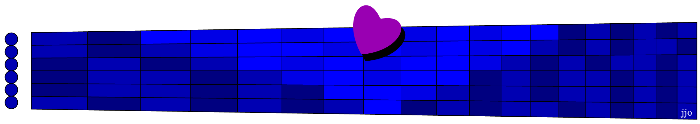

What do you think about when listening to classical music at a concert? Do you imagine what the composer was trying to say, or maybe you're so relaxed your mind wanders back to unrelated concerns, like "I don't think we should go to the same place for our summer holidays next year". That non-sequitur example is from Benjamin Zander's engaging TED Talk on The Transformative Power of Classical Music, where his main musical example is the same piano piece as in this month's sightreading handout.*.
Zander leads his audience note by note through the melody, explaining “The job of [that note] is to make the [next note, a half step lower] feel sad.” And it really does! Those two notes, repeated at intervals, are like the inhale and exhale from repeated sighs of regret. Before playing it through again, he asks the audience "Would you think of somebody who you adore, who's no longer there? Bring that person into your mind, ... and you'll hear everything [the composer] had to say".
However, there's a problem making this piano piece into a melodic sightreading exercise. While the right hand has mainly just those two simple notes of each sigh, the left hand uses chords to "explain" the context of those sighs; they provide the deepening tension and ultimate resolution behind those sighs, even when the sigh notes are not changing. Without those chords, there is only sad breathing.
But if you focus on how each chord changes gradually into the next, you can capture the tension of those progressions in a simple counter melody, in between the sighs. Is that new invention or the composer's intention? You can decide after playing this sightread.